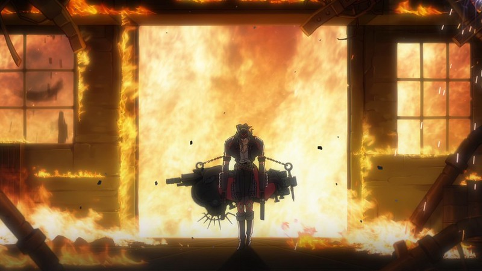
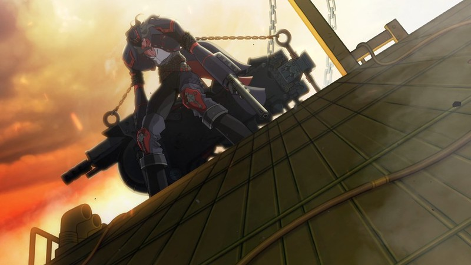
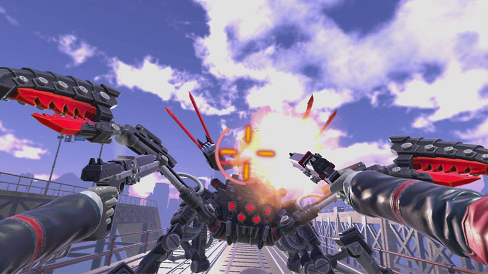
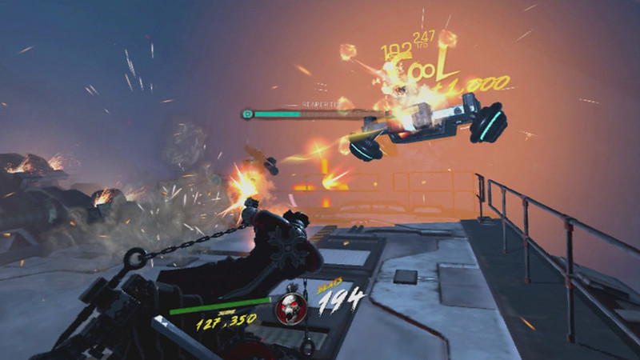

"Gungrave-VR-211118-005" by instacodez is marked with Public Domain Mark 1.0. To view the
terms, visit https://creativecommons.org/publicdomain/mark/1.0/?ref=openverse.
Gungrave follows the story of Beyond the Grave, a silent, undead gunslinger
resurrected by the mysterious scientist Dr. T to take revenge on the crime syndicate Millennion. Once a
loyal enforcer named Brandon Heat, Grave was betrayed and killed by his best friend Harry MacDowell, who
rose to power within the organization and turned it into a corrupt empire fueled by the deadly drug
SEED. Revived through necrotechnology, Grave relentlessly battles through waves of enemies and monstrous
“Orgmen” to dismantle Millennion and confront his former friend. Along the way, he protects Mika, the
daughter of his late mentor, who becomes a symbol of his humanity and the reason he continues fighting.
The game blends fast-paced third-person gunplay with a dark, tragic narrative about loyalty, betrayal,
and the price of vengeance.

"Gungrave-VR-211118-006" by instacodez is marked with Public Domain Mark 1.0. To view the
terms, visit https://creativecommons.org/publicdomain/mark/1.0/?ref=openverse.
Gungrave: Overdose picks up after the events of the first game, with Beyond the Grave continuing his
mission to wipe out the Millennion crime syndicate and the deadly SEED drug. This time, he is joined by
new allies, including the dual-gun-wielding Juji Kabane and the guitar-scythe-wielding Rocketbilly
Redcadillac, each with their own vendetta against SEED’s spread. Together, they battle a new wave of
enemies, mutant Orgmen, and powerful bosses while unraveling the schemes of those seeking to resurrect
and control the drug trade. As Grave faces increasingly brutal odds, the story deepens its focus on
revenge, redemption, and the bonds between unlikely companions fighting against overwhelming corruption.
The game’s narrative retains the dark, stylish tone of its predecessor while expanding the Gungrave
universe with fresh characters and more chaotic action.

"Gungrave-VR-211118-001" by instacodez is marked with Public Domain Mark 1.0. To view the
terms, visit https://creativecommons.org/publicdomain/mark/1.0/?ref=openverse.
Gungrave VR serves as a bridge between Gungrave: Overdose and Gungrave G.O.R.E., following Beyond the
Grave as he continues his relentless war against the SEED drug and the remnants of the crime syndicates
spreading it. Now armed with new abilities and seen from a first-person and third-person hybrid
perspective, Grave takes on missions across South City, wiping out Orgmen and enemy soldiers in
fast-paced shootouts. The story focuses on his ongoing hunt for the SEED’s source and the shadowy
figures controlling its distribution, while reinforcing his role as a nearly unstoppable undead gunman
driven by loyalty to the memory of his lost friends and his duty to protect the innocent. Though shorter
and more mission-based, the game keeps the series’ gritty tone and stylized gunplay intact.

"Gungrave-VR-211118-003" by instacodez is marked with Public Domain Mark 1.0. To view the
terms, visit https://creativecommons.org/publicdomain/mark/1.0/?ref=openverse.
Gungrave G.O.R.E. has players once again step into the shoes of the resurrected gunslinger known as
Grave—or the “Gunslinger of Resurrection”—as he embarks on a visceral mission of vengeance, love, and
loyalty. After the events of Overdose, Grave teams up with Mika Asagi and a resistance group named
El-Arcangel to combat the ravages of SEED, a corrupting drug tied to monstrous transformations. Their
quest leads them through Scumland, a sinister city, and onward across Southeast Asia—including
Vietnam, Cambodia, Hong Kong, Malaysia, and Singapore—in pursuit of the criminal Raven Clan, which aims
to spread SEED from a mysterious island